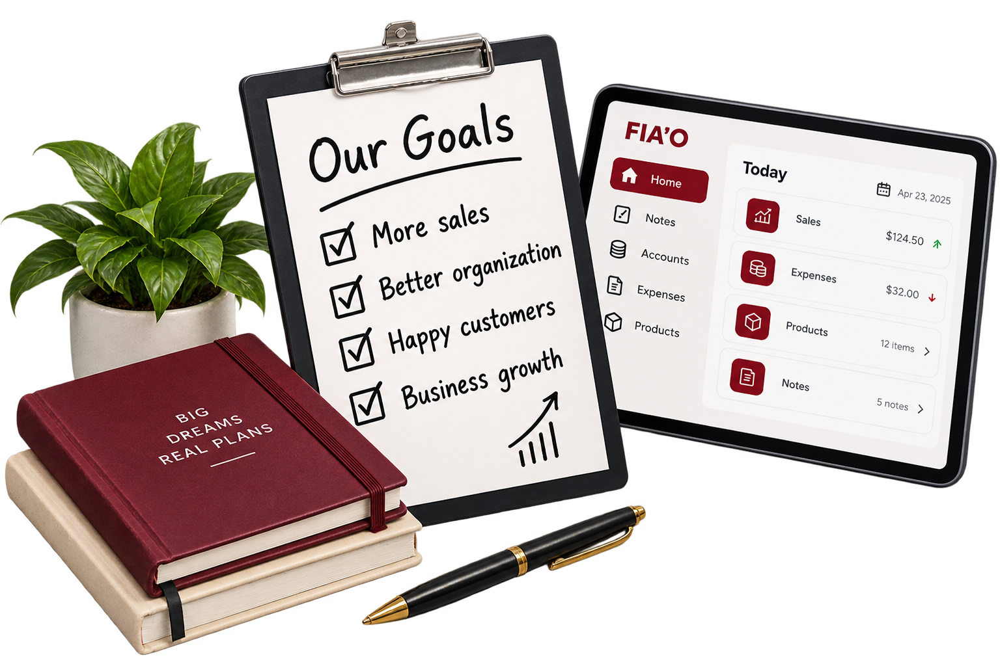

About FIA'O
FIA'O is much more than a digital notebook; it is a smart ecosystem designed to organize notes, manage credits, and keep track of daily operations with absolute elegance and zero friction.
We replace messy paperwork with a streamlined, fast, and secure interface. By optimizing how you structure notes and data, FIA'O helps you save time and focus on what truly matters.
Our Mission
To provide a reliable, clean, and intuitive digital notebook experience that simplifies note-taking and financial tracking for individuals and local merchants alike.
FIA'O actively assists small merchants by structuring credit records, automating reminders, and ensuring day-to-day operations run transparently without calculation errors.
Our Vision
To become the benchmark platform for digital organization and credit management, recognized for our security, elegance, and user-centric design.
We aspire to become the leading digital ecosystem for neighborhood stores across Panama and Latin America, driving sustainable financial growth and innovation.

Core Benefits of FIA'O
Engineered for maximum efficiency, speed, and intuitive comfort.
Note Organization
Structure your thoughts, daily tasks, and records logically without losing important information.
Easily categorize custom notes, track daily customer orders, and maintain clean digital ledgers for all your business transactions.
Ease of Use
A clean, minimalist user interface designed so you can start managing notes immediately with zero friction.
Simplifies everyday administrative tasks through intuitive navigation, responsive design, and instant multi-language support.
Quick Information Access
Find specific accounts, records, or notes in seconds using our streamlined navigation structure.
Access live customer ledgers, check credit balances instantly, and retrieve stored history without flipping through paper books.
Ready to Get Started with FIA’O?
Take control of your notes, accounts, and daily business operations with FIA’O.
Get Started with FIA'O